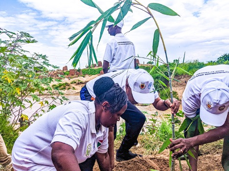

Burundi at a Crossroads: Balancing Nature, Climate, and Community Resilience
Laury Iteka
June 2, 2025
Every year, Burundi's natural wealth suffers as a result of human activity. Between deforestation, flooding and the impact of global warming, the population, already very vulnerable, is witnessing the degradation of resources on which it is heavily dependent.
Burundi is a magnificent country. Green hills lie alongside valleys where lakes, rice fields and streams intermingle. There is a primary forest, the Kibira, which covers some 40,000 hectares and is home to more than 600 plant species and numerous animals. A remarkable natural environment, but one that is being dangerously degraded by demographic pressure and the effects of climate change.
"The country's first challenge, in terms of the environment, is the galloping demography (average annual population growth of 3.3%), which has a negative impact on the conservation and effective management of natural resources and biodiversity", explains Prime Makenze, Coordinator of AGBD - Association pour la Gestion Durable de la Biodiversité au Burundi, one of our partners. Burundi is one of the most densely populated countries in the world, with 504 inhabitants per square kilometre, 17% more than Belgium.
Prime Makenze is also concerned about changes in the soil, particularly erosion."A very large part of the land is used for agriculture. Agriculture carried out by the local population, with no mastery of anti-erosion techniques and no maintenance of trees."
Deforestation and loss of biodiversity
Every year, when the dry season returns, hundreds of arson fires sweep away trees, denude hillsides and impoverish the country's biodiversity. According to Global Forest Watch, Burundi lost 6.6% of its vegetation cover between 2001 and 2023. The massive production of charcoal and agricultural needs are fuelling this deforestation process and further weakening the populations that depend so heavily on natural resources.
Burundians are also being hard hit by the effects of climate change. "Every year, the dry season gets longer. And when the rainy season comes, it's abundant. There is flooding, loss of life and damage all over the country" laments Gordien Nijimbere, an agricultural engineer and project manager at UCODE-AMR, a partner of Louvain Coopération.
These heavy rains also damage water pipes and increase the distances to be travelled to obtain drinking water. Finally, pollution and the virtual absence of waste management represent another major threat to the country's ecosystems and its population.
Raising awareness and finding alternatives
These findings are all the more worrying because they concern a region marked by ethnic conflict, where a fight over resources could be a devastating spark. So all the players on the ground agree: we need to act, and fast, but how? "One urgent action to halt environmental decline is to carry out large-scale awareness-raising campaigns to raise awareness, particularly in local communities", suggests Prime Makenze "But that won't be enough, because people need to live. We also need to develop actions that enable communities to finance themselves, alternative means of subsistence, to limit the supply of wood in particular and reduce the pressure on ecosystems. We need promising initiatives that can really improve living conditions."